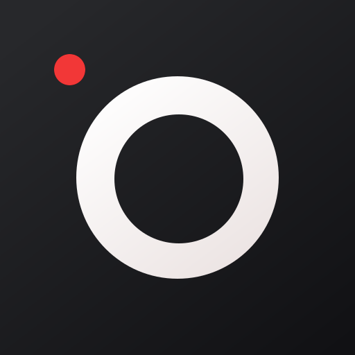

Stream high quality video from your iPhone's camera
Download OBS plugin for macOS and Windows here.
If you've ever wanted to use your iPhone camera as a video input to stream using OBS Studio, we've got you covered. We've tried all the apps that let you do it over wifi, but they're not fast enough, so we've created an app that streams video over a wired USB connection to your mac and pc.
iPhone's cameras is good, really good. There’s no comparison between the Logitech C922 HD Pro and the iPhone 6 Camera.
Stream video over a wired USB connection. This avoids the issue of delay over wifi, as many other products suffer from.
The app supports iOS 10+, and the OBS Studio plugin supports macOS 10.12.6+ and Windows.
Have a look at the quality difference between the highly recommended Logitech C922 HD Pro and an iPhone 6. Night and Day!
Drag the slider to compare the two sources.
To get started, buy the iOS App from the App Store (it's $10 USD), and then download the OBS iPhone Camera Plugin installer from Github.
This plugin costs a few dollars because it took time for me to create, saves you money on no longer needing to buy a webcam for $100, and I have features that I would like to add in the future which will require more time.
If you think this is missing any feature that you would like to see in the App, I would love your feedback. Please email me.
Installation instructions and frequently asked questions can be found here.
Overview - Getting Started - FAQs - Support
Overview - Getting Started - FAQs - Support